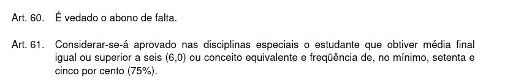

Capítulo 17 Orientações Gerais
17.1 Informações administrativas
17.1.1 Regimento geral da UEL
O Regimento Geral da Universidade Estadual de Londrina está disponível nesse link
Figure 17.1: Regimento Geral da UEL

Figure 17.2: Artigos 60 e 71 do Regimento Geral da UEL
17.1.3 Tutoriais para os estudantes da graduação da UEL
Tutoriais para os estudantes da graduação da Universidade Estadual de Londrina estão disponíveis nesse link
Figure 17.4: Tutoriais para os estudantes da graduação da UEL
17.2 Programas de atividade acadêmica para o segundo semestre de 2026
17.2.1 Engenharia Civil: 2STA016 - Estatística e probabilidades (2026/02)
17.2.1.1 Horários:
Turma 1000: segundas e sextas-feiras (10 h 15 min - 11 h 55 min)
Turma 2000: segundas e sextas-feiras (8 h 20 min - 10 h 00 min)
Turma 3000: segundas e quartas-feiras (19 h 15 min - 20 h 55 min)
17.2.1.2 Locais: CTU
Turma 1000: segundas-feiras: sala 1012 e sextas-feiras: sala 1015
Turma 2000: segundas-feiras: sala 1015 e sextas-feiras: sala 1014
Turma 3000: segundas-feiras e quartas-feiras: sala 1015
17.2.1.3 Ementa contida na Resolução Resolução CEPE/CA 073/2022:
Técnicas de amostragem. Medidas de posição e dispersão. Introdução à probabilidade. Variáveis aleatórias discretas, contínuas e suas principais distribuições de probabilidade. Inferência sobre médias, variâncias e proporções. Noções de planejamento de experimentos aplicados à Engenharia.
17.2.1.4 Conteúdo programático:
- Introdução à produção de conhecimento por meio da pesquisa científica: conceitos de população-amostra; parâmetro-estatística; tipo de variáveis; indexação de dados e operações derivadas; conjuntos, operações e suas representações por meio de diagramas de Venn; análise exploratória de dados; saneamento de dados (observações com erros não amostrais); sínteses numéricas de posição; sínteses numéricas de dispersão; medidas separatrizes; apresentações elementares na forma tabular e gráfica para dados qualitativos e quantitativos; sínteses numéricas para dados agrupados em tabelas de frequências.
- Introdução ao cálculo de probabilidades: experimentos aleatórios e determinísticos; espaço amostral, tipos de eventos; conceitos de probabilidade: (1) clássico (a ) ; (2) frequentista (a ); (3) conceito axiomático: a probabilidade como uma função; probabilidade da adição de eventos (disjuntos e não disjuntos); probabilidade de eventos (condicionados e independentes); regra de Bayes; variáveis aleatórias (discretas e contínuas), esperança e variância); funções de probabilidade (massa e densidade); modelos teóricos de probabilidade para variáveis aleatórias (discretas e contínuas).
- Introdução à inferência estatística: distribuições das médias e proporções amostrais; distribuição das variâncias amostrais; intervalos de confiança para a média, proporção e variância de uma população; intervalos de confiança para a diferença das médias e proporções de duas populações; testes de hipóteses sobre a média e proporção de uma população; testes de hipóteses sobre a diferença das médias e proporções de duas populações.
- Introdução ao planejamento de pesquisas: tipos de pesquisas; etapas; planejamento do levantamento amostral; tipos de levantamento amostral; dimensionamento de amostras.
17.2.1.5 Cronograma:
Aula 01 - Apresentações: (a) do programa de atividade acadêmica aprovado; (b) da sala de aula virtual criada (); (c) do calendário acadêmico do segundo semestre de 2026 (Resolução CEPE n\(^{o}\) 051/2025, 1); (d) de aspectos relevantes do Regimento Geral da UEL, especificamente os artigos 60 ( ao abono de falta) e 171 ( dos membros da Comunidade Universitária: alunos, servidores e professores); (e) da Res. CEPE 017/2023 (amparos). Noções sobre a produção de conhecimento por meio da pesquisa científica. Conceitos introdutórios e terminologia aplicada: população/amostra, parâmetro/estatística, estatística descritiva/inferencial e variável de estudo, tipos de variáveis.
Aula 02 - Uso de indexação em operações matemáticas de somas, conjuntos, elementos, subconjuntos e operações elementares, diagramas de Venn, análise exploratória de dados (EDA): dados brutos/saneados (observações com erro não amostral), estatísticas para dados (proporções/moda), sínteses numéricas descritivas para dados (de ): moda, média.
Aula 03 - Sínteses numéricas descritivas para dados (de ): valores mínimo/máximo, amplitude total, variância/desvio padrão, coef. de variação) padronização de dados quantitativos contínuos (Z-).
Aula 04 - Sínteses numéricas descritivas para dados (de separação): percentis, decis e quartis, Sínteses numéricas descritivas para dados (de forma): assimetria e medida de curtose).
Aula 05 - Apresentação tabular de dados, recomendações gerais para apresentação (elem. obrigatórios), tabelas para dados : simples e dupla entrada, apresentações gráficas elementares de dados : colunas, setores.
Aula 06 - Tabelas para dados : número de classes, amplitude e limites inf./sup. de cada classe, colunas de frequências absoluta, relativa (simples e acumuladas).
Aula 07 - Média, moda e variância para dados agrupados em tabelas de frequências.
Aula 08 - Apresentações gráficas para dados : barras, setores e para dados : histograma;
Aula 09 - Apresentação gráfica de dados :
Aula 10 - Primeira avaliação.
Aula 11 - complementação do calendário acadêmico (cf. Res. 051/2025, art. 1, parág. 3): devolutiva comentada da primeira avaliação.
Aula 12 - introdução ao cálculo de probabilidades: conceitos essenciais: experimentos aleatórios e determinísticos, a variável aleatória, o conjunto de possíveis resultados do experimento aleatório (espaço amostral e seus elementos), eventos simples e compostos (representações com diagramas de Venn).
Aula 13 - Introdução ao cálculo de probabilidades: conceitos essenciais de experimentos determinísticos/aleatórios, espaço amostral, eventos e tipos de eventos.
Aula 14 - progressão dos conceitos de probabilidade: (1) clássico (a ) ; (2) frequentista (a ); (3) conceito axiomático: a probabilidade como uma função.
Aula 15 - probabilidade da união de eventos.
Aula 16 - probabilidade de eventos condicionados e independentes.
Aula 17 - introdução ao teorema (regra) de Bayes.
Aula 18 - variáveis aleatórias discretas: conceito, esperança e variância, função massa de probabilidade.
Aula 19 - variáveis aleatórias contínuas: conceito, esperança e variância, função densidade de probabilidade.
Aula 20 - modelo teórico de Bernoulli e binomial para variáveis aleatórias discretas: esperança, variância e PMF;
Aula 21: modelo teórico de Poisson para variáveis aleatórias discretas: esperança, variância e PMF;
Aula 22 - modelos teóricos uniforme e exponencial para variáveis aleatórias contínuas: esperança, variância e PDF.
Aula 23 - modelo teórico Normal para variáveis aleatórias contínuas: esperança, variância e PDF.
Aula 24 - segunda avaliação.
Aula 25 - complementação do calendário acadêmico (cf. Res. 051/2025, art. 1, parág. 3): devolutiva comentada da segunda avaliação.
Aula 26 - distribuição das médias amostrais de uma população Normal e a construção de intervalos de confiança para \(\mu\): (a) \(\sigma\) ou \(\sigma\) mas \(n\) grande e (c) \(\sigma\) e \(n\) qualquer.
Aula 27 - distribuição das diferenças amostrais de duas populações Normais e construção de intervalos de confiança para \((\mu_{1}-\mu_{2})\): (a) \(\sigma_{1}, \sigma_{2}\) ou mas \(n_{1}, n_{2}\) grandes.
Aula 28 - distribuição das diferenças amostrais de duas populações Normais e construção de intervalos de confiança para \((\mu_{1}-\mu_{2})\): (b) \(\sigma_{1}, \sigma{2}\) e (c) \(\sigma_{1}, \sigma{2}\) e quaisquer.
Aula 29 - distribuição das proporções amostrais de duas populações binomiais e a construção de intervalos de confiança para \(\Pi\) por aproximação Normal.
Aula 30 - distribuição das diferenças das proporções amostrais de duas populações binomiais e a construção de intervalos de confiança para \((\Pi_{1}-\Pi_{2})\) por aproximação Normal.
Aula 31 - teste de hipóteses sobre a média \(\mu\) de uma população e sobre a igualdade das variâncias \(\sigma_{1}, \sigma{2}\) de duas populações Normais.
Aula 32 - teste de hipóteses sobre a proporção \(\Pi\) de uma população binomial pela aproximação Normal.
Aula 33 - introdução ao planejamento de levantamentos amostrais, tipos de levantamentos amostrais (probabilísticos e não probabilísticos), levantamento amostral aleatório simples e sistematizado, levantamento amostral aleatório estratificado e por conglomerados.
Aula 34 - dimensionamento de amostras para inferências sobre médias e proporções.
Aula 35 - complementação do calendário acadêmico (cf. Res. 051/2025, art. 1, parág. 3)
Aula 36 - terceira avaliação.
17.2.1.6 Bibliografia básica:
BARBETTA, Pedro A., REIS, Marcelo M. e BORNIA, Antonio C. (2024). Estatística para Cursos de Engenharia, Computação e Ciência de Dados. 4ª ed. Rio de Janeiro: LTC.
DEVORE, Jay L. (2018). Probabilidade e estatística para engenharia e ciências. 3ª ed. Porto Alegre: +A Educação - Cengage Learning Brasil.
MORETTIN, Pedro A. e O. BUSSAB, Wilton (2017). Estatística básica. 9ª ed. Rio de Janeiro: Editora Saraiva.
ROSS, S. M. (2010). Probabilidade: um Curso Moderno com Aplicações. 8ª ed. São Paulo: Bookman.
17.2.1.7 Procedimentos de ensino
- O processo de ensino será composto por um conjunto de atividades presenciais teóricas expositivas e resolução de exercícios em sala de aula a partir do dia 3/08/2026, nos dias e horários determinados no Sistema UEL.
- Todo material utilizado (textos, slides, listas de exercícios) será disponibilizado na sala de aula virtual a ser criada na Plataforma Google Classroom, de adesão compulsória por parte do discente, por meio de convite enviado ao seu email cadastrado no Sistema UEL.
- Toda comunicação entre discentes e o docente dar-se-á por meio de postagens na plataforma Google Classroom.
- As datas das três provas escritas presenciais e do exame final indicadas no cronograma a seguir poderão ser alteradas tanto em razão de situações não previstas no atual calendário acadêmico quanto do bom progresso das atividades didáticas, mediante comunicação aos alunos com devida antecipação.
17.2.1.8 Formas e critérios de avaliação:
Durante o semestre serão realizadas as seguintes atividades avaliativas:
- três (3) provas escritas presenciais (P1, P2, P3) referentes ao conteúdo das aulas e valendo de zero (0) a dez (10) pontos cada uma. A média final (\(MF\)) será calculada pela seguinte expressão (média aritmética simples):
\[
MF= \frac{1\times(P1) + 1\times(P2) + 1\times(P3)}{3}
\]
As prováveis datas das três provas escritas presenciais serão:
- Turmas 1000/2000: 4/09, 30/10 e 4/12.
- Turma 3000: 2/09, 4/11 e 2/12.
Ao final da disciplina haverá exame final conforme estabelecido no Regimento da UEL (Art. 59).
17.2.1.9 Bibliografia complementar:
MAGALHÃES, M. N. e LIMA, C. Pedroso de (2015). Noções de Probabilidade e Estatística. 7ª ed. São Paulo: Edusp.
MEYER, Paul L. (2010). Probabilidade: Aplicações à Estatística. 2ª ed. Rio de Janeiro: LTC. MONTGOMERY, Douglas C. e RUNGER, George C. (2021). Estatística Aplicada e Probabilidade para Engenheiros. 7ª ed. Rio de Janeiro: LTC.
MORETTIN, L. G. (2010). Estatística básica: probabilidade e inferência. São Paulo: Pearson Prentice Hall.
WALPOLE, R. E. (2009). Probabilidade e Estatística para Engenharia e Ciências. São Paulo: Pearson Prentice Hall.